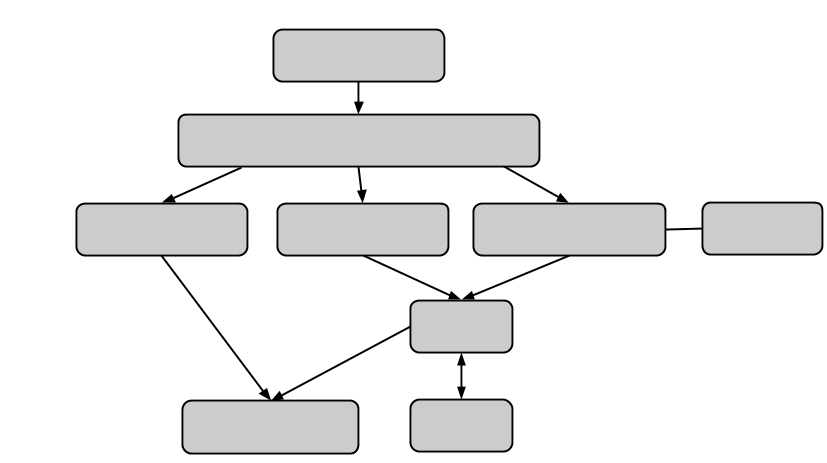

Introduction
Within this section of documentation, you will learn the fundamental concepts presented in Yosai. More detailed documentation, including tutorials, is available in subsequent sections.
What is Yosai?
Yosai helps you to control who can use your application and how it is used, managing state between requests. In other words, Yosai offers authentication, authorization, and session management, respectively.
Architectural Overview: yosai.core
Yosai is a framework, allowing you to add or replace components that are designed according to documented interface specifications. More specifically, the framework is defined using a collection of abstract base classes.

Although it is customizable, Yosai features a set of default implementations to address its most anticipated uses. It is "built to contract", featuring concrete implementations of abstract base classes that collectively define Yosai's architecture. Developers who find Yosai's default concrete implementations unsuitable for their needs may implement their own components according to ABC specifications and swap components.
Fundamentals
Initializing Yosai
With Yosai initialized, you can authenticate, authorize, and manage sessions.
To initialize Yosai, you must specify, at a minimum:
- What CacheHandler to use, if you are caching. In this example, we use the DPCacheHandler extension.
- The AccountStore instance(s) from which to obtain authentication and authorization information. In this example, we use the AlchemyAccountStore extension.
- The
marshmallowserialization Schema you will use to (de)serialize Session state (user-defined session attributes), if you are caching
from marshmallow import Schema, fields from yosai_dpcache.cache import DPCacheHandler from yosai_alchemystore import AlchemyAccountStore from yosai.core import SecurityUtils, AccountStoreRealm class SessionAttributesSchema(Schema): attribute1 = fields.String() attribute2 = fields.String() realm = AccountStoreRealm(name='UserAccountStore123', account_store=AlchemyAccountStore()) security_manager = NativeSecurityManager(cache_handler=DPCacheHandler(), realms=(realm,), session_schema=SessionAttributesSchema) yosai = SecurityUtils(security_manager=security_manager)
- To properly serialize your session attributes, you must define a
marshmallowschema class, which in this example we've arbitrarily named SessionAttributesSchema
Introducing: Subject
The three core services provided by Yosai are:
- Authentication
- Authorization
- Session Management
These services share a common API that you will use to interact with them: the Subject API.
Every security related operation is performed in the context of a Subject. The term "Subject" is generally synonymous with "User" except that aside from human beings also includes non-human, system entities. In other words, a Subject is a person or a thing.
Authentication
In this example, we "log in" a Subject, performing password-based authentication that raises an AuthenticationException if authentication were to fail.
Note that the following example assumes that a yosai instance has already
been instantiated and configured with a SecurityManager. See the yosai init
documentation, further below, for how to do that.
from yosai.core import AuthenticationToken with yosai: subject = yosai.subject authc_token = UsernamePasswordToken(username='thedude', credentials='letsgobowling') subject.login(authc_token)
UsernamePasswordToken is a consolidation of a user account's identifying attributes (username) and credentials (password) submitted by a user during an authentication attempt
Authorization
Authorization is conducted in your application either by decorating methods with an authorization check, such as in the example below, or by expicitly calling one of Subject's access control methods.
The following example confirms whether the user logged in above has sufficient privileges to approve a bowling tournament application. We illustrate what is known as the declarative style authorization. Information about authorization styles can be found in the authorization documentation.
from yosai.core import check_permission @check_permission(['tournament:approve']) def approve_tournament_application(self, tournament_application): tournament_application.status = 'APPROVED' self.notify_approval(tournament_application)
Session Management
Yosai offers session management for anonymous guests or authenticated users. In the Authentication example above, the Subject is automatically allocated a new session in Yosai following successful authentication. We manage the attributes of a session through a CRUD-like series of methods:
Note that the following example assumes that a yosai instance has already
been instantiated and configured with a SecurityManager. See the yosai init
documentation, further below, for how to do that.
with yosai: subject = yosai.subject session = subject.get_session() session.set_attribute('full_name', 'Jeffrey Lebowski')